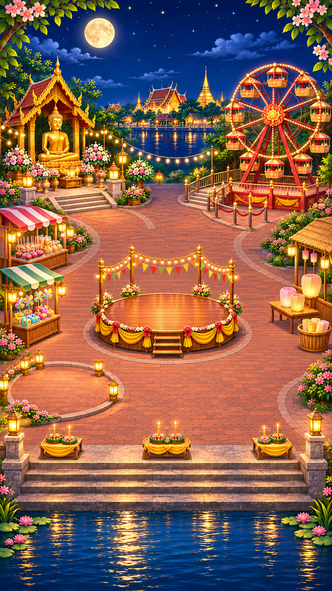

<!doctype html><html lang="th"><meta charset="utf-8"><meta name="viewport" content="width=device-width,initial-scale=1"><title>แผนผังงานวัดกลางคืน</title><style>*{box-sizing:border-box}body{margin:0;background:#101522;color:#f8ebcf;font:16px system-ui,sans-serif}main{max-width:1050px;margin:auto;padding:20px;display:grid;grid-template-columns:minmax(260px,530px) 1fr;gap:24px}.map{position:relative}.map img{display:block;width:100%;border-radius:12px}.map svg{position:absolute;inset:0;width:100%;height:100%;overflow:visible}h1{font-size:25px}p{line-height:1.7;color:#ccc7bc}button{padding:12px;margin:4px 0;width:100%;border:1px solid #69562f;border-radius:9px;background:#242b39;color:#ffdf94;text-align:left;font:inherit;cursor:pointer}button[aria-pressed=true]{background:#5e4320}a{color:#ffdf94}.note{background:#242b39;padding:14px;border-radius:10px}#label{min-height:50px} @media(max-width:720px){main{display:flex;flex-direction:column}aside{order:-1}.map{max-width:530px;margin:auto}}</style><main><div class="map"><svg viewBox="0 0 1080 1920" aria-label="แนวทางเดินตัวละคร"><path id="route" fill="none" stroke="#57f0ca" stroke-width="7" stroke-linecap="round" stroke-linejoin="round"/><g id="dots"></g></svg></div><aside><h1>งานวัดกลางคืน · แบบที่ 2</h1><p class="note">ภาพและแผนผังสำหรับตรวจตำแหน่ง ยังไม่ใช่กิจกรรมจริง และไม่ได้สลับฉากที่กำลัง LIVE</p><p>เลือกกิจกรรมเพื่อดูแนวทางเดินจากจุดเข้าลาน</p><div id="buttons"></div><p id="label"></p><p>ชิงช้าและกระเช้ายังรวมอยู่ในภาพ ต้องแยกเป็นชิ้นก่อนทำให้หมุนและรับตัวละครขึ้นนั่งได้ รวมถึงเพิ่มชิ้นบังหน้าเวทีสำหรับการเดินขึ้นลง</p><a href="layout.json">ดูพิกัดกิจกรรม</a></aside></main><script>const plan={"id":"temple-fair-night","status":"layout-draft-not-integrated","image":"scene.png","imageSize":{"width":941,"height":1672},"canvas":{"width":1080,"height":1920},"coordinates":"normalized-0-to-1","spawn":"entry","nodes":{"entry":[0.5,0.72],"leftFront":[0.36,0.69],"leftLane":[0.29,0.49],"leftJunction":[0.36,0.42],"centerJunction":[0.5,0.43],"rightJunction":[0.71,0.43],"rightLane":[0.76,0.51],"rightFront":[0.76,0.67],"prayerQueue":[0.36,0.38],"prayer":[0.24,0.35],"wheelQueue":[0.66,0.405],"wheelBoard":[0.73,0.36],"shop":[0.235,0.5],"stageEntry":[0.5,0.6],"dance":[0.5,0.55],"sparklers":[0.17,0.67],"lantern":[0.82,0.62],"waterApproach":[0.5,0.76],"pier":[0.5,0.842]},"edges":[["entry","leftFront"],["leftFront","leftLane"],["leftLane","leftJunction"],["leftJunction","centerJunction"],["centerJunction","rightJunction"],["rightJunction","rightLane"],["rightLane","rightFront"],["rightFront","entry"],["leftJunction","prayerQueue"],["prayerQueue","prayer"],["rightJunction","wheelQueue"],["wheelQueue","wheelBoard"],["leftLane","shop"],["entry","stageEntry"],["stageEntry","dance"],["leftFront","sparklers"],["rightFront","lantern"],["entry","waterApproach"],["waterApproach","pier"]],"zones":[{"id":"prayer","label":"ไหว้พระ","node":"prayer","queue":"prayerQueue"},{"id":"wheel","label":"ต่อคิวขึ้นชิงช้า","node":"wheelBoard","queue":"wheelQueue"},{"id":"shop","label":"ร้านค้า","node":"shop"},{"id":"dance","label":"เวทีรำวง","node":"dance","queue":"stageEntry"},{"id":"sparklers","label":"จุดไฟเย็น","node":"sparklers"},{"id":"lantern","label":"ปล่อยโคม","node":"lantern"},{"id":"water","label":"ท่าน้ำ","node":"pier","queue":"waterApproach"}],"notes":["เดินรอบเวทีทางซ้ายหรือขวา; ขึ้นเวทีผ่านบันไดหน้าเท่านั้น","พื้นที่น้ำเริ่มประมาณ y=.86 ตัวละครหยุดบนท่าน้ำก่อนขอบน้ำ","จุดปล่อยโคมใช้ทางลอยโค้งออกสู่ท้องฟ้ากลางภาพเพื่อเลี่ยงชิงช้า","ต้องแยกวงล้อ กระเช้า ราวหน้าเวที และชิ้นบังหน้าเพิ่มเติมก่อนทำกิจกรรมจริง","แผนผังนี้ยังไม่ถูกเชื่อมกับของขวัญ ตัวละคร หรือธีมที่ออก LIVE"]};const ns='http://www.w3.org/2000/svg';for(const z of plan.zones){const b=document.createElement('button');b.textContent=z.label;b.onclick=()=>{document.querySelectorAll('button').forEach(x=>x.setAttribute('aria-pressed','false'));b.setAttribute('aria-pressed','true');const paths=[[plan.spawn]],seen=new Set([plan.spawn]);let result;while(paths.length){const p=paths.shift(),last=p.at(-1);if(last===z.node){result=p;break;}for(const[a,c]of plan.edges){const next=a===last?c:c===last?a:null;if(next&&!seen.has(next)){seen.add(next);paths.push([...p,next]);}}}document.getElementById('route').setAttribute('d',result.map((k,i)=>(i?'L':'M')+plan.nodes[k][0]*1080+','+plan.nodes[k][1]*1920).join(' '));document.getElementById('dots').replaceChildren();for(const [i,k]of result.entries()){const dot=document.createElementNS(ns,'circle');dot.setAttribute('cx',plan.nodes[k][0]*1080);dot.setAttribute('cy',plan.nodes[k][1]*1920);dot.setAttribute('r',i===result.length-1?15:8);dot.setAttribute('fill',i===result.length-1?'#ffdf70':'#57f0ca');dot.setAttribute('stroke','#14232e');dot.setAttribute('stroke-width','3');document.getElementById('dots').append(dot);}document.getElementById('label').textContent='ปลายทาง: '+z.label+' · พิกัดร่าง ต้องปรับระยะตามขนาดตัวละครจริง';};document.getElementById('buttons').append(b);}</script></html>